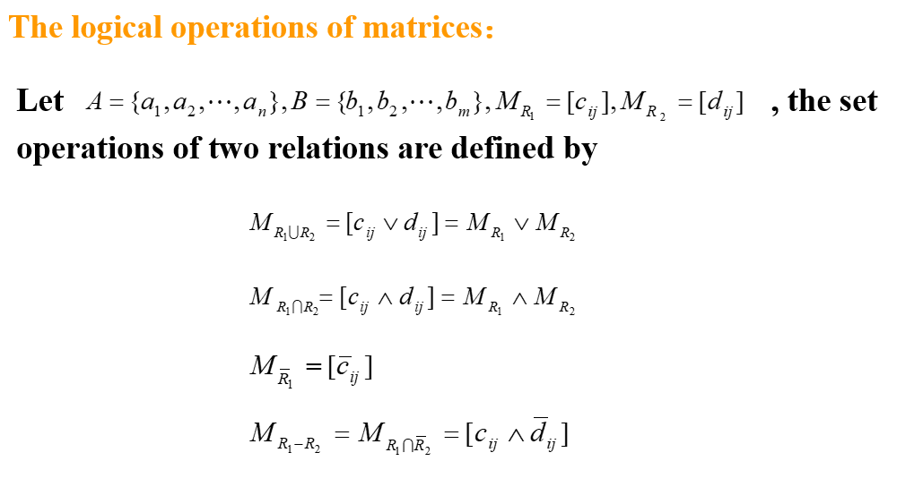
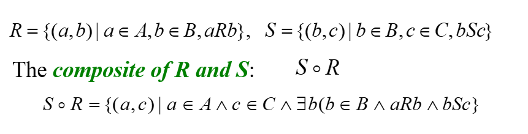
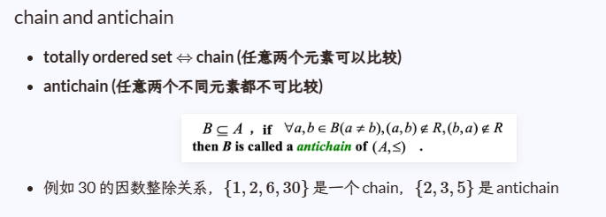

CH 9 : Relations¶
约 2274 个字 预计阅读时间 11 分钟
9.1 Relations and Their Properties¶
定义¶
A binary relation(二元关系) R from set \(A\) to set \(B\) is a subset of \(A\times B\)
Note
A binary relation R is a set
\(R\subseteq A\times B\)
\(R=\{(a,b)|a\in A ,b\in B ,aRb\}\)
Functions As Relations
The graph of function 是从A到B的一个relation，但是relation不一定是function，因为一个x可能对应多个y
A relation of set A is a relation from A to A.
表示方式¶
- list its all ordered pairs 列举所有pairs
- using a set build notation/specification by predicates 利用条件语句的set
- 2D Table
- Connection Matrix / Zero-one Matrix
- Digraph
2D Table¶

Connection Matrices¶

因此，binary relations on a set A with n elements 共有\(2^{n^2}\)个
Digraph¶

Example

Special Properties of Binary Relations¶
- Reflexive 自反性
- Irreflexive 反自反性
- Symmetric 对称性
- Antisymmetric 反对称性
- Transitive 传递性
Definition A relation R on a set A is reflexive if
对于任意A中元素，(x,x)都在R中
因此，若用矩阵表示，矩阵正对角线应当全部为1；若用有向图表示，每个vertex都应该有个loop指向自己
自反关系个数为\(2^{n ^2-n}\)
Definition A relation R on a set A is irreflexive if
对于任意A中元素，(x,x)都不在R中
因此，若用矩阵表示，矩阵正对角线应当全部为0；
存在relation既不是reflexive也不是irreflexive:

反自反关系个数为\(2^{ n^2-n}\)
因此既不是自反，也不是反自反的relation共有\(2^{n ^2} - 2*2^{ n^2-n}\) 个
Definition A relation R on a set A is symmetric if
用矩阵表示，则矩阵关于对角线对称
对称关系的个数为\(2^n \cdot 2^{\frac{ n^2-n}{2}} = 2^{\frac{ n^2+n}{2}}\)
Definition A relation R on a set A is antisymmetric if
注意，只是关于对角线不存在两个都为1的情况，(0,1)是允许的
因此，也可以这样表示关系:

反对称关系的个数为\(2^ n\cdot 3^{\frac{ n^2-n}{2}}\)
Definition A relation R on a set A is transitive if
用 \(m_{ij}\) 表示矩阵第i行第j列的值，则有 \(\overline{m_{ij}\land m_{jk}}\lor m_{ik}=1\)
判别特征的例子


由symmetric和transitve不能推导出reflexive
Combining Relations¶
- Set operation
- Composition
- Inverse relation
Set operation¶

Composition¶

注意，R是前面那个

利用矩阵乘法可以求Composition

利用有向图求Composition

Definition Let R be a relation on the set A. The powers \(R^n,n=1,2,3,...\) are defined recursively by
Theorem The relation R on a set A is transitive if and only if \(R^n\subseteq R,for \ n=1,2,3,...\)
对称关系的n次方还是对称的

Inverse relation¶


9.4 Closures of Relations¶
- Reflexive Closure
- Symmetric Closure
- Transitive Closure
Definition The closure of relaitons R with respect to property P is the relation S with respect to property P containing R such that S is a subset of every relation with property P containing R.
关系R关于性质P的闭环，就是一个具有性质P且包含R的最小关系S。
Reflexive Closure¶
Theorem Let R be a relation on A . The reflexive closure of R , denoted by \(r(R)\) , is \(R\cup I_A\ \ I_A=\{(x,x)|x\in A\}\)
证明需要证明Closure的三个性质
- 包含R 2. 是Reflexive的关系 3. 是包含R的最小Reflexive关系

- 用集合表示的话，就是往R里面加入所有不在R内的\((a,a)\ where\ a\in A\)
- 用有向图表示的话，则是给每一个Vertex添加loop
- 用connection matrix表示则在主对角线上全置1
Example
Question： \(R=\{(a,b)|a<b,a,b\in Z\}\) what is \(r(R)\)?
\(r(R)=R\cup I_A =\{(a,b)|a<b,a,b\in Z\} \cup \{(a,a)|a\in Z\}\)
\(=\{(a,b)|a\le b,a,b\in Z\}\)
Symmetric Closure¶
Theorem Let R be a relation on A . The symmetric closure of R , denoted by \(s(R)\) , is \(R\cup R^{-1}\)
证明需要证明Closure的三个性质
- 包含R 2. 是Symmetric的关系 3. 是包含R的最小Symmetric关系


- 用集合表示的话，如果\((a,b)\)在R内且\((b,a)\)不在R内，则加上
- 用有向图表示的话，如果存在一个edge从 y 到 x，再加上一个从 x 到 y 的edge
- 用connection matrix表示则 \(M_{s(R)} =M_R \lor M_R^T\)
Transitive Closure¶
先导知识:
- 有向图中一段长度为n的path可以用sequence表示:\((x_0 ,x_1),( x_1, x_2),...,(x_{n-1} ,x_{n})\)
- 也可以简写成 \(x_0 ,x_1 ,x_2 ,...,x_{n-1} ,x_{n}\)
- 如果 \(x_0= x_n\ (n\ge 1)\)，则称这条path为 Cycle 或者 Circuit
- \(|A|=n\Rightarrow Any\ path\ of\ length\ >n\ must\ contain\ a\ cycle\)
Theorem Let R be a relation on A . There is a path of length n from a to b if and only if \((a,b)\in R^n\)
可以用数学归纳法证明： \((a,x)\in R\ ,\ (x,b)\in R^{n-1} \Rightarrow (a,b)\in R^{n}\)
Definition The connectivity relation denoted by \(R^*\) , is the set of ordered pairs (a,b) such that there is a path (in R) from a to b : \(R^* =\bigcup_{n=1}^{\infty} R^n\) and \(t(R)=R^*\)
Corollary If \(|A|=n\) , then \(t(R)=R^* =R\cup R^2\cup ...\cup R^n\)
9.5 Equivalence Relations¶
Definition A relation R on a set A is an equivalence relation if R is :
- reflexive
- symmetric
- transitive
等价关系例子
(1) \(\{(a,b)|a+b=2m,a,b,m\in N\}\)
(2) The similarity relation between two triangles
(3) The equvalent relation between two fomulas in proposition logic
If R is an equvalence relations and (a,b) in R , then we note that a~b ,which means a and b is equvalent .
Definition The set of all elements that are related to an element x of A is called the equivalent class of x (等价类)
Notation : \([x]_R\ \ [x]\)
Example


Theorem 对于等价关系 R ，以下statements是等价的：
- \(a R b\)
- \([a]=[b]\)
- \([a]\cap [b]\ne \emptyset\)
Definition A partition of set A is a collection of disjoint nonempty subsets of A that have A as their union
- \(A_i \ne \emptyset \ \ for\ i\in I(I\ is\ an\ index\ set)\)
- \(A_i \cap A_j=\emptyset,when\ i\ne j\)
- \(\bigcup _{i\in I} A_i =A\)
Notation: \(pr(A)=\{A_i|i\in I\}\)
集合的划分和等价类一一对应
Example

如何计算等价关系的最大个数？
- n元集合的等价类的个数 \(B_{n+1} =\sum _{k=0}^n C_n ^k B_k,where\ B_0= B_1=1,B_2=2\)
- 可以利用类帕斯卡三角形手算
- 将1放在第一个位置
- 每行三角形中最左边的值通过复制上一行中最右边的值。每行中的其余位置是左侧和左上方位置的两个值之和
Example

Properties
\(R_1\)和\(R_2\)是集合A上两个等价关系，则：
- \(R_1\cap R_2\) is equvalence relation on A
- \(R_1\cup R_2\) is reflexive and symmetric relation on A
- \(\overline{R_1\cup R_2}\) is equvalence relation on A
9.6 Partial Ordering¶
Definition A relation R on a set S is partial ordering or partial order if R is :
- reflexive
- antisymmetric
- transitive
Notation: (S,R) --- partial ordered set or poset , \(a\preceq b\) --- \((a,b)\in R\)
Info
\(\preceq\) precede or equal to 先于或等于 用latex打即 \preceq
Example

如何计算偏序关系的最大个数？
- 画成Hasse Diagrams图进行分类计算
- 按照层数不同进行分类
- 如，一个含有三个元素的集合，最多含有 19 个偏序关系

- Comparable:
- \(a,b\ of\ (S,\preceq),a\preceq b\ or\ b\preceq a\)
- Incomparable:
- \(a,b\ of\ (S,\preceq),neither\ a\preceq b\ nor\ b\preceq a\)
如果Set S中任意两个元素都Comparable，那么称 \(\preceq\) 是 totally ordered (全序) or linearly ordered set .且 \((S,\preceq)\) 被称为 chain
Example

Lexicographic Order 字典序¶
导演剪辑版
将元素看作字符串里面的单个字符，比大小比的是\preceq

Theorem A lexicographic ordering on the Cartesian product of two posets is a partial ordering.
两个posets的叉乘的字典序还是posets
字典序例子

也可以延申为多个posets的笛卡尔积(Cartesian Products)

Hasse Diagrams 哈斯图¶
A method used to represent a partial ordering
How to obtain a Hasse Diagrams
- \(A\ =\ \{1,2,3,4,5,6,7,8,9\},R\ =\ \{(a,b)|\ a|b,a,b\in A\}\)
1.用有向图表示所有关系

2.删除自环

3.删除可以通过传递性得到的边

4.转为无向图

More Example

Chain and Antichain¶
不想写了，直接把学长的笔记截图过来

Maximal and Minimal Elements 极大值和极小值¶
Definition Let \((A,\preceq)\) be a poset . \(a\in A\) , then a is a maximal element if there does not exist an element b in A such that \(a\prec b\) .

Info
极大值和极小值就是Hasse Diagrams种最上面一层和最下面一层的元素
Greatest and Least Element 最大值和最小值¶
Definition Let \((A,\preceq)\) be a poset . \(a\in A\) , then a is a greatest element if \(b\preceq a\) for every b in A .

Info
如果最大值和最小值存在，则是唯一的。注意，最大值要求所有其它元素都preceq它，如上图（2）中 6 和 9 就不 preceq 8
Upper and Lower Bounds 上下界¶

在此基础上还有 Least upper bound (记为lub(A))和 Greatest lower bound (记为glb(A))，字面意思指上下界中最大或最小的元素
Well-ordered Sets 良序集¶
Definition A poset(A,R) is well-ordered set if every nonempty subset of A has a least element .
A well-ordered set is a totally ordered set 良序则全序
Lattices 格¶
Definition 一个poset被称为lattices如果每对元素都有lub和glb
Info

Topological Sorting¶
（还没搞懂，以后再来看）